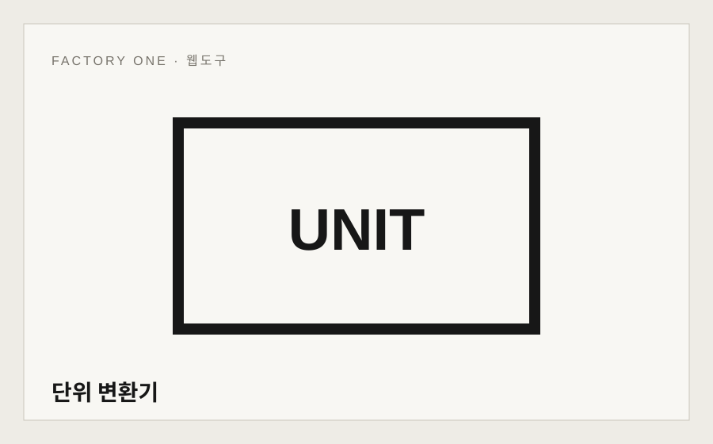

4개 분류
빠른 단위 변환기
길이·무게·넓이·속도를 한 화면에서 양방향 변환합니다.
Factory OneFREE
통합 변환기 하나에 모든 기능을 숨기지 않고 자주 찾는 온도·데이터·일반 단위를 목적별 도구로 분리했습니다. 필요한 변환에 바로 들어가고 양방향 결과를 빠르게 확인할 수 있습니다.

길이·무게·넓이·속도를 한 화면에서 양방향 변환합니다.

섭씨·화씨·켈빈을 즉시 변환합니다.

KB·MB·GB·TB를 1024/1000 기준으로 변환합니다.

기존 길이·무게·넓이·온도·속도·데이터 통합 변환기입니다.
범용 변환기는 그대로 유지하면서 검색 빈도가 높은 온도와 데이터 용량은 독립 페이지로 구성했습니다. 값·변환방향·기준을 화면에서 명확하게 확인할 수 있습니다.